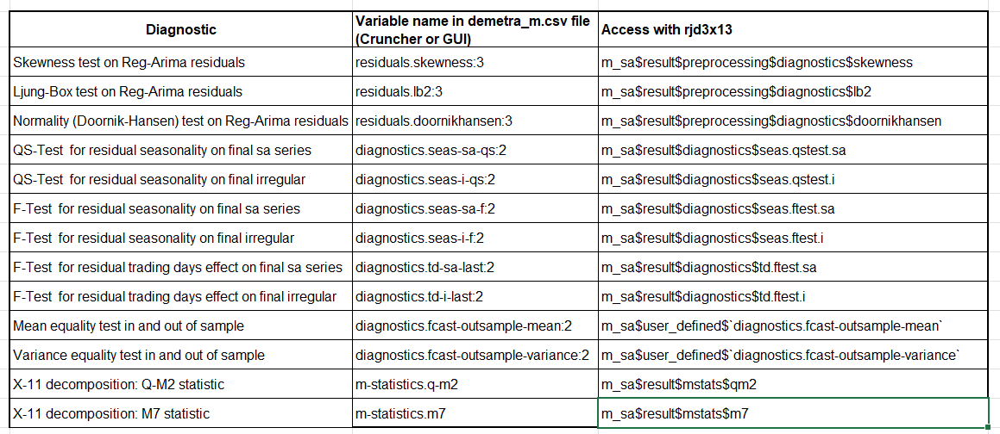

cal_FR <- create_french_calendar()Appendices
Calendar effect correction
There are two possible procedures for generating calendar regressors: creating customized regressors as shown below, or using predefined regressors in JDemetra+, which also requires defining a reference calendar. Version 3.x of the GUI allows you to automatically [select 🔗)(https://jdemetra-new-documentation.netlify.app/a-sa-pre-treatment#calendar-correction) from the predefined regressor sets, based on statistical tests.
Instead of a simple national calendar 🔗, JDemetra+ allows you to create “chained” 🔗 or “composite” 🔗 with the GUI or rjd3toolkit 🔗.
Creating a reference calendar
To create a French calendar based on French public holidays, you can use the create_french_calendar() 🔗 function from the {rjd3production} package:
This function can be adapted to any national calendar.
Generation of regressor sets
Using the French calendar, it is possible to generate calendar regressors based, for example, on the usual groups used by INSEE:
regs <- create_insee_regressors(start = c(2000, 1), frequency = 12, length = 360)
sets <- create_insee_regressors_sets(start = c(2000, 1), frequency = 12, length = 240)
names(sets) [1] "REG1" "REG2" "REG3" "REG5" "REG6" "LY" "REG1_LY"
[8] "REG2_LY" "REG3_LY" "REG5_LY" "REG6_LY"Quality Report: Diagnostics and R code
Diagnostics selected by default when using X-13-Arima are as follows:
Table A1: Diagnostics

In R, the diagnostics are extracted from the “m_sa” object containing all the estimation results and obtained with the code below.
m_sa <- x13(my_series, my_spec, userdefined = c("diagnostics.fcast-outsample-mean","diagnostics.fcast-outsample-variance"))
str(m_sa)More information on the tests is available in the documentation 🔗
Score equation
\[ \begin{aligned} score\_total &= 30 * grade\_qs\_residual\_s\_on\_sa\\ &+ 30 * grade\_f\_residual\_s\_on\_sa\\ &+ 30 * grade\_f\_residual\_td\_on\_sa\\ &+ 20 * grade\_f\_residual\_td\_on\_i\\ &+ 20 * grade\_qs\_residual\_sa\_on\_i\\ &+ 20 * grade\_f\_residual\_sa\_on\_i\\ &+ 15 * grade\_oos\_mean\\ &+ 10 * grade\_oos\_mse\\ &+ 15 * grade\_residuals\_independency\\ &+ 5 * grade\_residuals\_skewness\\ &+ 5 * grade\_residuals\_homoskedasticity\\ &+ 5 * grade\_q\_m2\\ &+ 5 * grade\_m7 \end{aligned} \]
Annual campaign: comparison of workspaces
Creation of WS_work
The WS_work is a merger between WS_ref and WS_auto. A score is calculated for both workspaces and, for each series, the SA-Item is retrieved from the workspace with the lowest score between WS_auto and WS_ref.
In an annual campaign process, we will use the transfer_sa_item() 🔗 function from {rjd3workspace} to merge WS_ref and WS_auto.
# save WS_ref as initial version of WS_work
WS_auto <- load_workspace(file = "./WS/WS_auto.xml")
WS_work <- load_workspace(file = "./WS/WS_work.xml")
sap1_auto <- .jws_sap(jws = WS_auto, idx = 1)
sap1_work <- .jws_sap(jws = WS_work, idx = 1)
# update ws_work with sa-items from ws auto when necessary
transfer_series(
jsap_from = sap1_auto,
jsap_to = sap1_work,
selected_sa_items = c("RF0610", "RF0620")
)
save_workspace(jws = WS_work, file = "./WS/WS_work.xml")Additional information on specifications
Modification
Reference Specification
Modification in the GUI:

Using this same menu, you can apply the Reference Specification or the Result Specification to a series.
In the rjd3workspace package, Reference Specification is called Domain Specification:
library("rjd3workspace")
set_domain_specification(jsap, 1L, new_domain_spec)Estimation Specification
Modification in GUI, use the Specification button on the right-hand side:

In the rjd3workspace package, Estimation Specification is simply referred to as Specification:
library("rjd3workspace")
set_specification(jsap, 1L, new_estimation_spec)Result Specification
Estimation result can be applied as indicated below.
library("rjd3workspace")
jws_compute(jws)
read_workspace(jws, compute = TRUE)
read_sap(jsap)
read_sai(jsai)Refresh policy behavior
A refresh policy is designed to remove all or some of the constraints from the Estimation Specification and revert to the Reference Specification.
The “concurrent” policy reverts to the
Reference Specificationby clearing user-defined parameters not written to the domain spec (changes made via the specification window on the right are discarded). In particular, it clears the outliers pre-specified in theEstimation Specification; all outliers will be re-identifiedThe “lastoutliers” policy clears the outliers pre-specified in the
Estimation Specificationfor the last year (or other defined span); re-identification will be performed for this period.
This allows the user to distinguish between permanent settings (Reference Specification) and temporary settings (Estimation Specification).
Example
Here is a common procedure for updating data in the case of an intra-annual campaign, with output generation using Cruncher. Note: You must save the workspace before performing a “refresh” (via the GUI or Cruncher).
New raw data is available (new data points and revisions to recent history).
Use a “refresh last outliers” to benefit from automatic detection for the last year
Check the results and revisions; for certain important series, you may want to review the automatic detection
We open the graphical interface and modify the
Estimation Specificationfor a series via the window on the right by adding an outlier (\(Out_1\)) in the last yearWe apply and save these changes in the GUI
We must regenerate an output with the Cruncher (export of final series)
If the Cruncher uses “policy=lastoutliers” again: it reverts to the
Reference Specificationfor the last year, and \(Out_1\) is lostIf you want to keep \(Out_1\), use the option policy = “arimaparameters”; the identification remains unchanged, only the coefficients are re-estimated
To keep \(Out_1\) and re-identify using “lastoutliers” again, you must include \(Out_1\) in the
Reference Specification.
Differences between version 2 and version 3
In JDemetra+ version 2.x, there was no Estimation Specification. The settings set by the user were therefore necessarily saved in the Reference Specification and hence never deleted by a refresh policy.
workspaces created in version 2 can be opened in version 3, but it will no longer be possible to return to version 2.
Copying specifications when a version 2 workspace is opened in version 3:
Reference Specificationis copied inReference Specificationand inEstimation SpecificationResult Specificationis copied inResult Specification
Data structures
workspaces are organized into SA-Processing and SA-Item.
SA-Processing
An SA-Processing (SAP) is represented by an .xml file. It contains SA-Items and user-defined reference specifications.
SA-Item
An SA-Item contains information about a given series:
raw data
specifications (
pointSpecification,estimationSpecification, `Specification``)metadata
Metadata
The metadata (see the .xml file corresponding to SA-Processing) contains:
the type of source of the raw data
the “id” of the file containing the raw data (path and parameters) that will be used to refresh the estimate
any comments on the series (generally used to justify a choice of parameters)
Modelling context
The modelling context contains the calendars, variables, and external regressors needed for the estimates made in the workspace.
Migration to JDemetra+
It is possible to convert X-13 specifications used in the US Census Bureau’s X-13-Arima-Seats software into JDemetra+ X13-Arima specifications.
This operation is performed using the graphical interface with the SpecParser 🔗 plug-in, which can only be used in version 2. The workspace containing these specifications can be opened in version 3. The plug-in documentation can be found here 🔗 and all the migration steps are described here 🔗 in the JDemetra+ documentation.